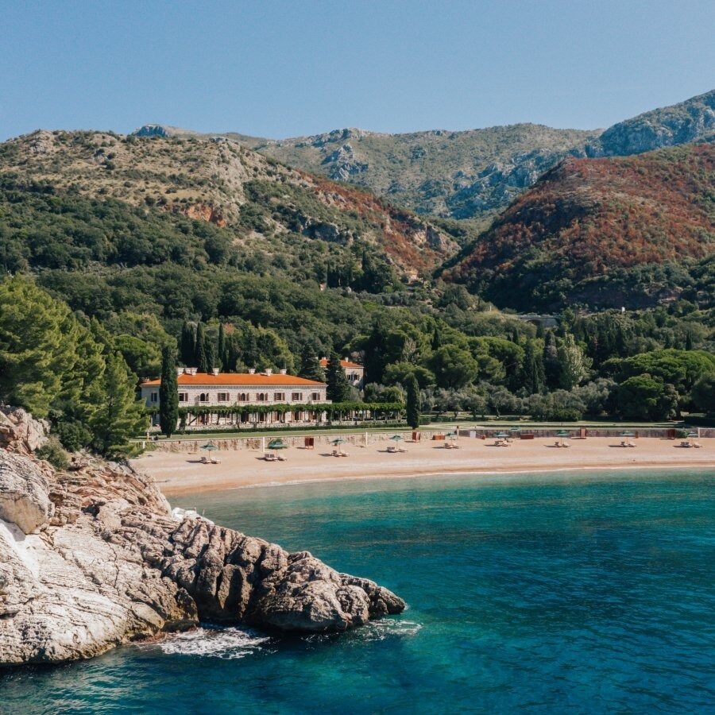
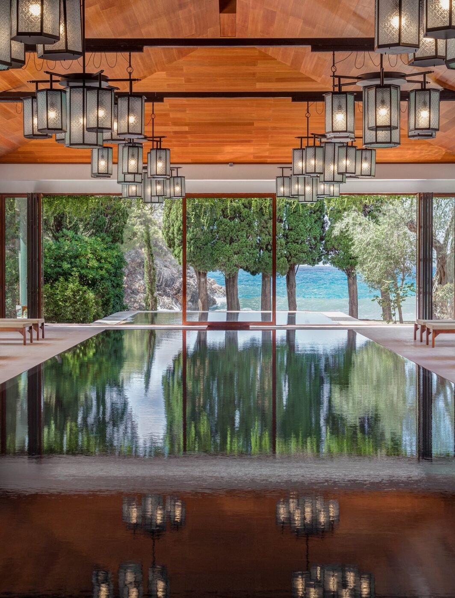

Five summers since the island went dark. The cottages reopen for guests on 1 July, the mainland villa is already back.
The road south from Budva turns a corner and the picture arrives all at once. A pink-roofed village on a rocky island, joined to the coast by a slim spit of sand, water either side. Aman has held the lease on Sveti Stefan since 2009. The doors closed in 2021 over a beach access dispute. They are opening again.
The deal
The closure ran nearly five years and turned political. The new agreement, confirmed by Prime Minister Milojko Spajić in May, settles the question of who walks where. Sveti Stefan Beach and King’s Beach return to public use for nearby residents. Queen’s Beach stays for Aman guests. The state takes a 10 percent share of the resort’s profits.
Villa Miločer opened first, on 22 May, with the Aman Spa, Queen’s Beach and King’s Beach. The island village follows on 1 July for the summer season. Villa Miločer now runs year-round; the island keeps its seasonal rhythm.

Villa Miločer, on the mainland above King’s Beach · Courtesy of Aman
The island
The fortified village is fifteenth century, stone laid over stone on a small rocky outcrop. Aman counts 33 cottages and suites inside the walls, restored under the original footprint. Lanes are cobbled and narrow. Doorways open onto courtyards shaded by old olive trees. Queen Marija Karadđorđević, the last queen of Yugoslavia, summered here through the 1930s, in the villa across the water.
The island has always done its best work in the early hours and the late ones. Light moves across the terracotta roofs at sunrise. By dusk the bay turns oil black and the lights from the village pick up. The Adriatic is warm by July.
The mainland
Villa Miločer was Queen Marija’s summer house, built in 1934 and folded into the Aman estate when it took the lease. There are six suites in the main villa and two more in a separate structure on the grounds. Pine and cedar surround the building; the lawn runs down toward King’s Beach.
The view does not need to be earned here, only kept. Sveti Stefan has always known what it is.
The Splendid EditThe Aman Spa sits behind the villa, with two hydrotherapy suites, an indoor pool and treatment rooms that face the sea. Dining moves between the Queen Marija Restaurant on the Miločer terrace and the village tavernas on the island. The kitchen leans Adriatic, light on the cooking and heavy on the local catch.

The Aman Spa pool, mainland · Courtesy of Aman
Getting there
Tivat airport is forty minutes away by road and takes private aviation. Dubrovnik is closer to two hours, with a border crossing at the top of the Bay of Kotor. The boat from Porto Montenegro is the better arrival in good weather, an hour down the coast.
Sveti Stefan has spent the last decade in postcards and pinboards, a closed icon photographed from above by everyone who passed. The picture is the same. The lights are on this time.
Aman Sveti Stefan reopens in stages through summer 2026, with Villa Miločer already welcoming guests on the mainland. Rates and bookings through aman.com.
Photography courtesy of Aman · Aman Sveti Stefan, Montenegro